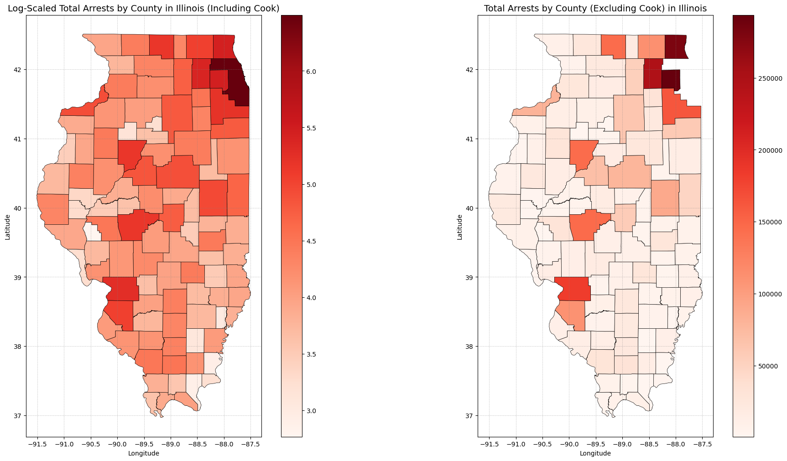
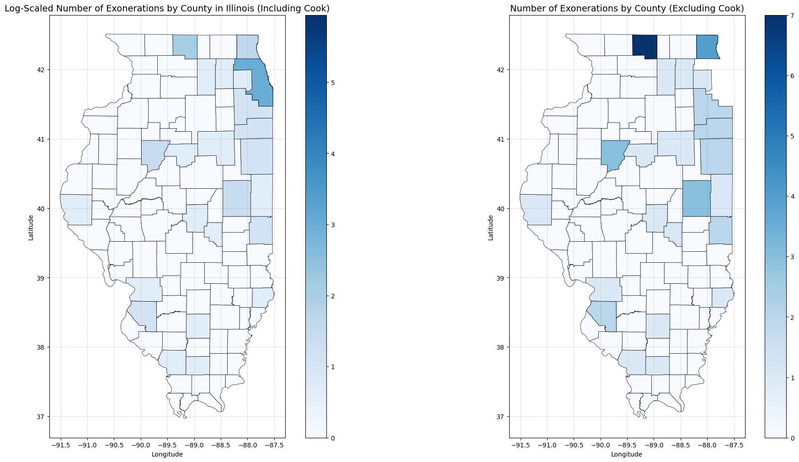
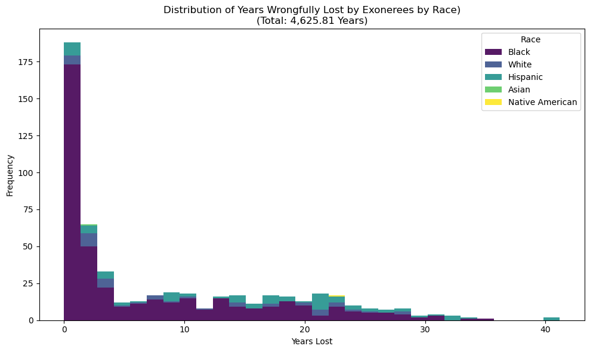
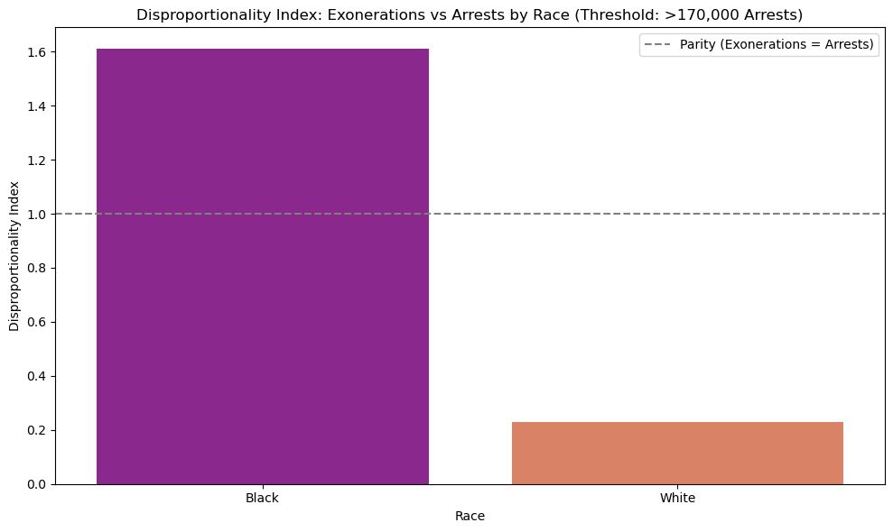
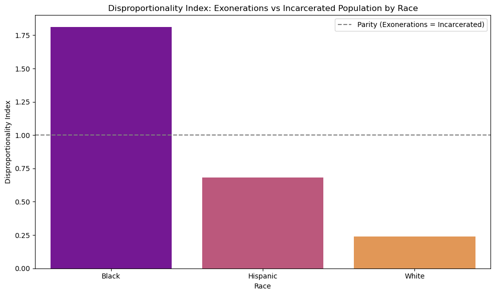
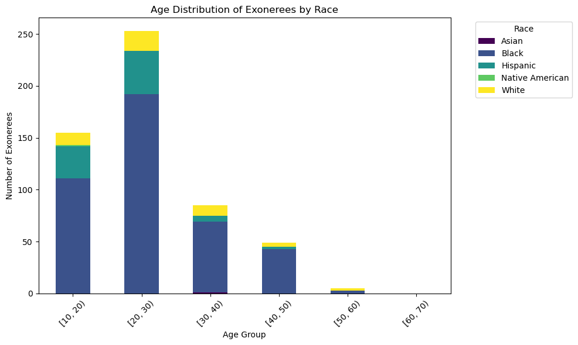
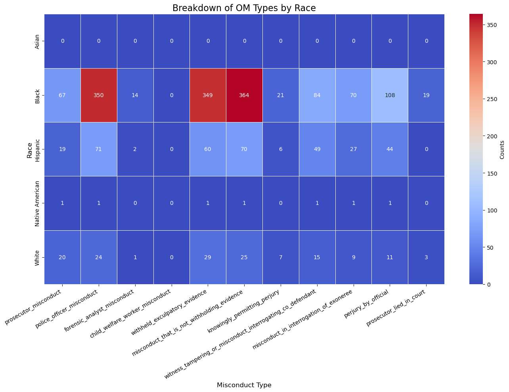
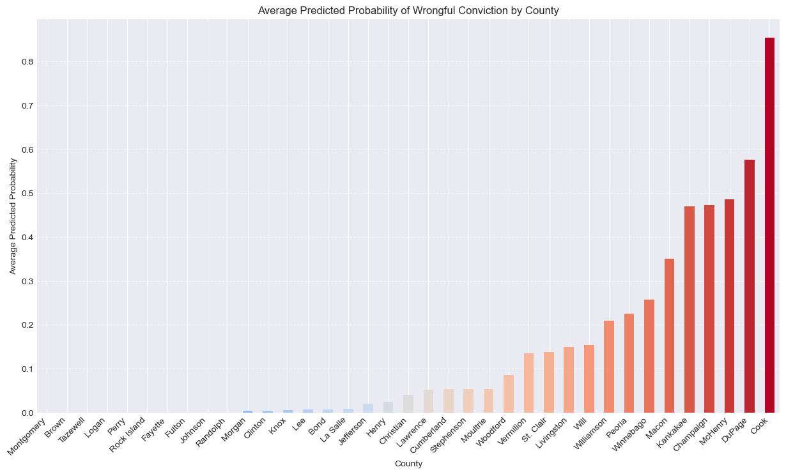
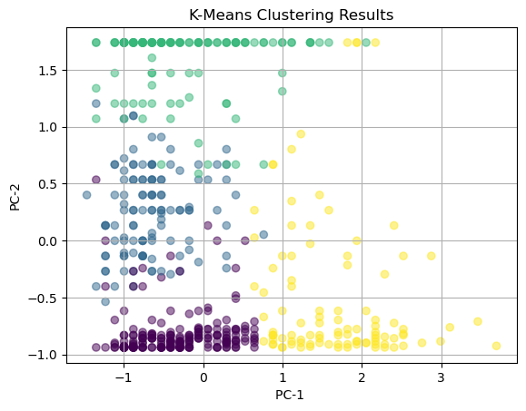
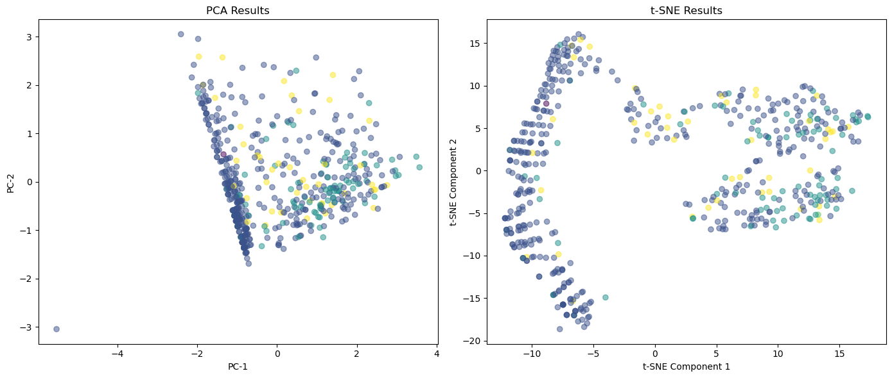

Cell Block Tango:
Steps of Misconduct, Over-Policing, and Cycles of Racial Injustice in Chicago’s Criminal Justice System
Executive Summary
This report investigates systemic failures in Illinois’ criminal justice system, emphasizing the disproportionate impact of wrongful convictions and over-policing on marginalized communities, particularly Black men. Through comprehensive data analysis and machine learning models, key findings highlight racial disparities, patterns of police misconduct, and geographic trends. Actionable recommendations aim to drive policy reforms, improve accountability, and reduce systemic bias.
Research Questions
- What patterns emerge in exoneration data across Illinois counties, and how do they reflect systemic failures in the justice system?
- Why does Chicago account for such a disproportionate share of wrongful convictions in Illinois?
- Does over-policing disproportionately target marginalized communities, particularly Black and Latino populations?
- What role does police misconduct play in wrongful convictions across Illinois? Is there a relationship between misconduct and race?
- Can data-driven models identify predictive patterns of wrongful convictions and over-policing across Illinois counties?
Data Visualizations and Key Insights
1. Geospatial Trends of Arrests and Exonerations by County
Log-Scaled Arrests

Log-Scaled Exonerations

- Insight: Cook County leads Illinois in both arrests and wrongful convictions, showing its outsized role in systemic failures. Smaller rural counties, while having fewer total cases, still display disproportionately high rates of wrongful convictions relative to their population size. This suggests that geographic disparities exist, and rural patterns remain underexplored in justice system analyses.
2. Distribution of Years Wrongfully Lost by Race

- Insight: Black individuals have disproportionately lost years to wrongful imprisonment compared to other racial groups. The distribution skews heavily toward shorter wrongful imprisonments, but significant outliers exist where individuals lost 20+ years. These findings highlight the compounding harm caused by systemic injustice, as even shorter sentences fracture families and communities.
5. Overrepresentation Ratios by County

- Insight: Black and Latino populations are significantly overrepresented in incarceration rates across Illinois counties. The map highlights systemic disparities, particularly in counties with higher urban populations and historical patterns of policing bias. White populations, by contrast, remain largely underrepresented in incarceration rates. These findings emphasize racial inequities in the justice system at a county level.
6. Disproportionality Index: Exonerations vs. Arrests by Race

- Insight: Exonerations compared to arrests highlight the front-end failures in the justice system. Black individuals have a disproportionality index exceeding 1.6, meaning they experience wrongful convictions at rates far higher than their arrest frequency would suggest. This points to over-policing and biased arrest practices that disproportionately affect Black communities. White individuals, in contrast, have a disproportionality index well below parity, suggesting fewer wrongful arrests and more favorable outcomes. These trends emphasize systemic bias in policing practices, where wrongful convictions are more likely to result from unjustified or excessive arrests among marginalized populations.
7. Disproportionality Index: Exonerations vs. Incarcerated Population by Race

- Insight: The Disproportionality Index comparing exonerations to the incarcerated population underscores deeper systemic inequities within the justice process. The dashed line at 1.0 represents parity—where exonerations align proportionally with incarceration rates. For Black individuals, the index value significantly exceeds 1.8, indicating extreme overrepresentation in wrongful convictions relative to incarceration rates. This suggests systemic issues, such as biased investigations, sentencing disparities, and racial profiling, disproportionately impacting Black communities.
Hispanic individuals show an index value below that of Black individuals but above White populations, indicating some disproportionality but to a lesser extent. White individuals have the lowest index value, well below 1.0, suggesting fewer wrongful convictions or more favorable systemic outcomes. Together, these findings highlight racial disparities across the justice system, where Black individuals face the greatest burden of wrongful incarceration.
8. Age Distribution of Exonerees by Race

- Insight: Wrongful convictions primarily impact Black men aged 20-30, a period critical for family stability, career development, and education. This age-based harm perpetuates cycles of poverty and systemic trauma, further marginalizing affected individuals and communities.
9. Breakdown of Official Misconduct by Race

- Insight: Black individuals are overwhelmingly impacted by police misconduct, including perjury, false accusations, and suppression of evidence. This pattern reinforces systemic racial bias in the justice process and raises calls for enhanced accountability and oversight mechanisms within law enforcement.
10. Predicted Probabilities of Wrongful Conviction
By County

By Race and County

By Race

- Insight: Predictive models identify Cook County and surrounding areas as high-risk for wrongful convictions, particularly for Black individuals. Smaller counties also display concerning probabilities, reinforcing the presence of systemic racial inequities across Illinois’ justice system.
11. K-Means Clustering Results

- Insight: Cluster analysis reveals clear groupings of cases based on racial, geographic, and misconduct-related factors. Notably, clusters with higher concentrations of Black exonerees correlate with misconduct-prone counties, highlighting systemic racial targeting within these jurisdictions.
12. Dimensionality Reduction Results

- Insight: Principal Component Analysis (PCA) and t-SNE visualizations reveal distinct patterns across racial and geographic dimensions. These visualizations demonstrate that race is a key driver in wrongful convictions, particularly for Black and Hispanic populations. Misconduct cases show dense clustering, indicating systemic patterns rather than isolated incidents.
Societal Implications
The mass incarceration of Black men has long destabilized the Black nuclear family, tearing apart households and perpetuating cycles of poverty and generational harm.1 Yet the findings here reveal an even more harrowing truth: these are wrongful convictions—individuals who were never supposed to be incarcerated in the first place. This adds another insidious layer of injustice, where systems built to uphold fairness instead weaponize racialized biases in policing, prosecution, and sentencing.
Wrongful convictions do not exist in a vacuum. Each exoneration represents more than a stolen life—it signifies fractured families and devastated communities. Mothers are left to shoulder single-parenting burdens, while children grapple with emotional trauma, educational setbacks, and weakened familial bonds. Financial strain intensifies this instability, as lost income, mounting legal fees, and post-incarceration barriers stifle any chance of recovery. The harm is systemic, generational, and deeply racialized.
This data exposes what many have long understood: wrongful convictions are not random, isolated errors. They are the result of a broader, racialized system that targets, oppresses, and disintegrates Black communities under the guise of justice. Without meaningful intervention, these cycles of harm will persist, continuing to undermine the very foundations of equity and opportunity.
Conclusions and Recommendations
The evidence is clear. Black individuals face disproportionate harm from wrongful convictions and over-policing, a reality compounded by systemic patterns of police misconduct. Cook County emerges as a glaring epicenter of these failures, but the problem is not confined to a single geography. Across Illinois, racial inequities in the justice system remain deeply entrenched.
Key Findings
- Black individuals are disproportionately targeted, incarcerated, and wrongfully convicted.
- Police misconduct—perjury, evidence tampering, and suppression—is a key driver of these injustices.
- While Cook County dominates the data, smaller counties also reveal patterns of systemic bias and misconduct.
Recommendations
To address these injustices, reforms must confront both the drivers of wrongful convictions and their far-reaching consequences:
- Strengthen Police Accountability: Implement independent oversight bodies with the power to investigate and prosecute police misconduct. Increase transparency and enforce zero tolerance for perjury, evidence tampering, and other forms of corruption.
- Judicial and Legislative Reforms: Expedite the review of wrongful convictions through dedicated courts or commissions. Ensure access to legal representation for individuals pursuing exoneration.
- Data-Driven Policymaking: Leverage machine learning and data analysis to identify high-risk counties, monitor patterns of misconduct, and inform targeted reforms.
- Community Investment and Restoration: Redirect resources toward education, mental health services, and economic support for communities most impacted by wrongful convictions. Initiate programs to support exonerees and their families, including financial restitution, housing assistance, and workforce reintegration.
These measures are essential not only to prevent future miscarriages of justice but also to repair the devastating harm inflicted on individuals, families, and entire communities.
Call to Action
The time for incremental change has passed. Systemic injustices require bold, comprehensive solutions. Policymakers, researchers, and advocates must work together to dismantle the cycles of harm perpetuated by wrongful convictions and over-policing.
The data is clear: Black men are disproportionately targeted, their lives derailed not by legitimate justice, but by bias, misconduct, and institutional failures. This crisis extends beyond individual cases—it reflects deeply embedded flaws that fracture families, destabilize communities, and erode public trust in the justice system.
To move forward, it’s necessary to center impacted voices, address racialized practices in law enforcement and prosecution, and commit to the restoration and healing of harmed communities. Real accountability—both for institutions and individuals—is not optional; it is a moral imperative.
Justice demands more than apologies or empty promises—it requires action. It is time to transform the system, not as a tool of harm, but as a foundation for equity, dignity, and restoration.